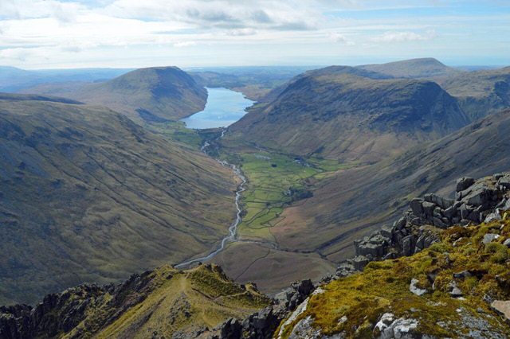
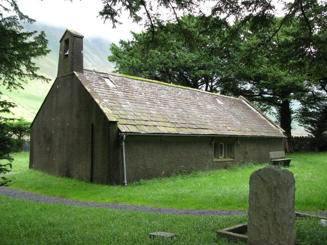

View of Wasdale and Wast Water
By Doug Sim - Own work, CC BY-SA 4.0, https://commons.wikimedia.org/w/index.php?curid=39403903
St. Olaf's Church - Smallest parish church in England.
By Mike Quinn, CC BY-SA 2.0, https://commons.wikimedia.org/w/index.php?curid=6326318